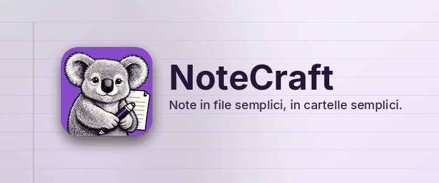

Note in file semplici, in cartelle semplici.
NoteCraft conserva le note come conservi i file: un quaderno è una cartella, una sezione è una cartella, una pagina è una cartella con un file e le sue immagini dentro. Niente resta chiuso in un database, quindi qualsiasi cartella che il tuo strumento di sincronizzazione già controlla diventa un quaderno sincronizzato, e un backup è una copia.
Ogni pagina di questa sezione mostra una parte di NoteCraft, sulla pagina stessa:
Clicca in un punto qualsiasi di questo paragrafo e scrivi. La pagina si salva da sola circa un secondo dopo che smetti. Premi Invio a fine riga per un nuovo paragrafo, ed Esc per uscire.
Torna alla pagina iniziale.